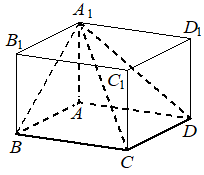

Авторский разбор и аудит предварительны; внешней экспертизы нет.
Модель автора: claude-opus-5-5 (opus; effort=low); в основных частотах: True ·
Впишите правильный ответ.
| Найдите объём многогранника, вершинами которого являются вершины прямоугольного параллелепипеда у которого |  |
КЭС: 7.4 Тела и поверхности вращения
36
| ID / вход | Действие | Результат | Локальные KC |
|---|---|---|---|
| s1 · condition | Распознать многогранник с вершинами A, B, C, D, A1 как четырёхугольную пирамиду с основанием ABCD и вершиной A1; высота — ребро AA1, перпендикулярное плоскости основания в прямоугольном параллелепипеде | Пирамида A1ABCD, основание — прямоугольник ABCD, высота AA1 = 4 | kc1 |
| s2 · condition, s1 | Вычислить площадь прямоугольника ABCD | S = 3·9 = 27 | kc2 |
| s3 · s1, s2 | Вычислить объём пирамиды по формуле V = S·h/3 | V = 27·4/3 = 36 | kc3 |
[
{
"id": "m1",
"name": "Объём пирамиды, выделенной в прямоугольном параллелепипеде",
"step_ids": [
"s1",
"s2",
"s3"
]
}
]Вход: набор вершин параллелепипеда. Операция: определить основание и вершину получившегося многогранника (пирамиды) и выбрать ребро параллелепипеда, перпендикулярное основанию, как высоту. Применимо, когда вершины задают пирамиду с основанием на грани.
{
"local_kc_id": "kc1",
"status": "new_candidate",
"catalog_kc_id": null,
"evidence": [
{
"ref": "step:s1:action",
"quote": "Распознать многогранник с вершинами A, B, C, D, A1 как четырёхугольную пирамиду с основанием ABCD и вершиной A1; высота — ребро AA1, перпендикулярное плоскости основания в прямоугольном параллелепипеде"
},
{
"ref": "step:s1:result",
"quote": "Пирамида A1ABCD, основание — прямоугольник ABCD, высота AA1 = 4"
},
{
"ref": "image:assets/e10db4cac070de620cab0761.png",
"region_description": "Параллелепипед ABCDA1B1C1D1; из вершины A1 пунктиром проведены отрезки к A, B, C, D, выделяя пирамиду с основанием ABCD на нижней грани"
}
],
"context_refs": [
"condition",
"image:assets/e10db4cac070de620cab0761.png"
],
"alternatives_checked": [
{
"catalog_kc_id": "literal_0cd75b4548b3",
"reason": "Распознавание призмы по двум параллельным основаниям, а не пирамиды по вершинам"
},
{
"catalog_kc_id": "literal_71811f9f6a63",
"reason": "Доказательство перпендикулярности по двум пересекающимся прямым; здесь перпендикулярность ребра взята из свойства прямоугольного параллелепипеда без такого доказательства"
},
{
"catalog_kc_id": "literal_6f2cb1731d16",
"reason": "Тип сечения плоскостью, а не многогранника по набору вершин"
},
{
"catalog_kc_id": "pyramid_volume",
"reason": "Вычисление объёма; выделение пирамиды и её высоты в него не входит"
}
],
"rationale": "Операция — по набору вершин прямоугольного параллелепипеда установить, что многогранник является пирамидой с основанием на грани, и взять боковое ребро, перпендикулярное этой грани, как высоту. В каталоге нет определения распознавания пирамиды и выбора высоты внутри параллелепипеда.",
"proposal": {
"name": "Выделять пирамиду в прямоугольном параллелепипеде и её высоту",
"definition": "По заданным вершинам прямоугольного параллелепипеда установить основание (лежащее в грани) и вершину пирамиды; в качестве высоты взять ребро параллелепипеда из вершины пирамиды, перпендикулярное плоскости основания по свойству прямоугольного параллелепипеда."
},
"blocking": false,
"issue_ids": []
}Вход: длины смежных сторон прямоугольника. Операция: перемножить их. Граница: только для прямоугольника.
{
"local_kc_id": "kc2",
"status": "new_candidate",
"catalog_kc_id": null,
"evidence": [
{
"ref": "step:s2:action",
"quote": "Вычислить площадь прямоугольника ABCD"
},
{
"ref": "step:s2:result",
"quote": "S = 3·9 = 27"
}
],
"context_refs": [
"condition",
"step:s1:result"
],
"alternatives_checked": [
{
"catalog_kc_id": "right_triangle_area",
"reason": "Площадь прямоугольного треугольника как половина произведения катетов, а не прямоугольника"
},
{
"catalog_kc_id": "literal_19971b364ca1",
"reason": "Объём призмы, а не площадь основания"
}
],
"rationale": "Операция — площадь прямоугольника как произведение смежных сторон AB=3 и AD=9; то, что ABCD прямоугольник, следует из s1 и условия. В каталоге нет узла площади прямоугольника.",
"proposal": {
"name": "Вычислять площадь прямоугольника по смежным сторонам",
"definition": "Для установленного прямоугольника перемножить длины двух смежных сторон."
},
"blocking": false,
"issue_ids": []
}Вход: площадь основания и высота пирамиды. Операция: V = S·h/3. Граница: высота перпендикулярна плоскости основания.
{
"local_kc_id": "kc3",
"status": "match",
"catalog_kc_id": "pyramid_volume",
"evidence": [
{
"ref": "step:s3:action",
"quote": "Вычислить объём пирамиды по формуле V = S·h/3"
},
{
"ref": "step:s3:result",
"quote": "V = 27·4/3 = 36"
}
],
"context_refs": [
"step:s1:result",
"step:s2:result"
],
"alternatives_checked": [
{
"catalog_kc_id": "literal_19971b364ca1",
"reason": "Объём призмы без множителя 1/3"
},
{
"catalog_kc_id": "physical_formula_substitution",
"reason": "Подстановка в заданную прикладную формулу; здесь геометрическая формула объёма пирамиды, для которой есть точный узел"
}
],
"rationale": "Применена V=S·h/3 с площадью основания 27 из s2 и перпендикулярной высотой AA1=4 из s1, что целиком соответствует определению pyramid_volume. Перпендикулярность высоты установлена в s1, а не в этом шаге. Ответ 36 арифметически верен.",
"proposal": null,
"blocking": false,
"issue_ids": []
}[]
[]
{
"author_path": "data/annotation/runs/2026-11-09-fipi-team-bogdan108-next-100/raw/author/68281C.json",
"auditor_path": "data/annotation/runs/2026-11-09-fipi-team-bogdan108-next-100/raw/auditor/68281C.json",
"accepted_after_review": null
}